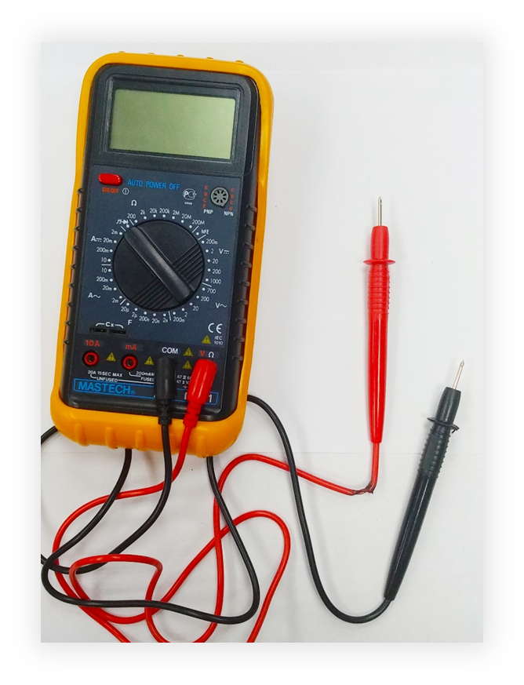

Общие правила техники безопасности

1. Запрещено приступать к выполнению задания при обнаружении неисправности измерительного инструмента или оборудования.
2. Запрещено пользоваться инструментом непромышленного производства, либо имеющим повреждения.
3. Запрещено размещать измерительные приборы и аппаратуру снаружи и внутри шкафов и других элементах конструкций.
4. При работе с электрическими приборами и машинами необходимо следить, чтобы открытые части тела, одежды, волос.